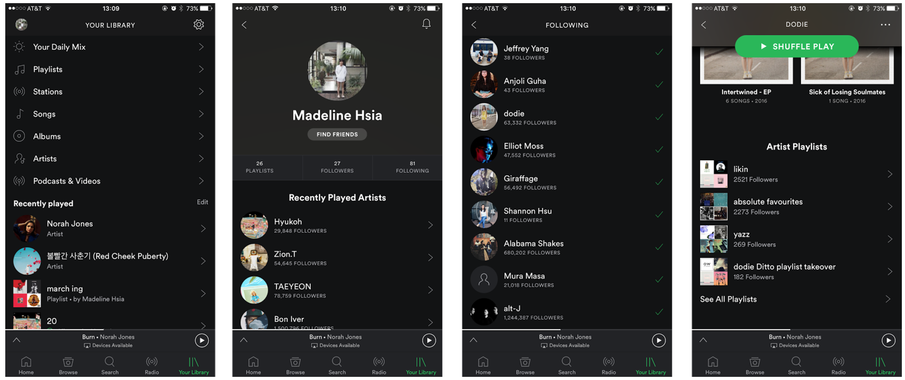
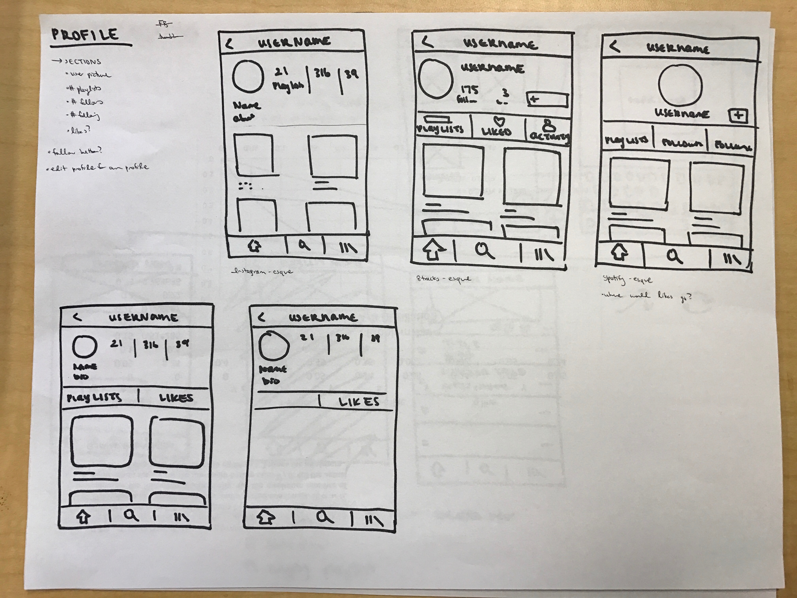
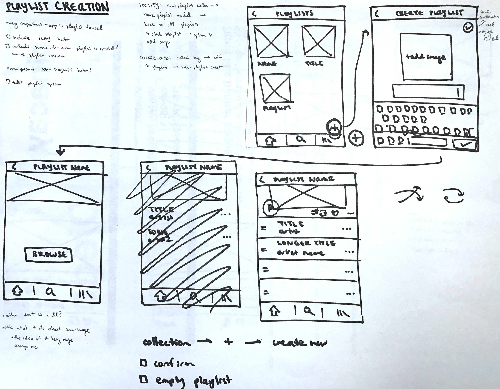
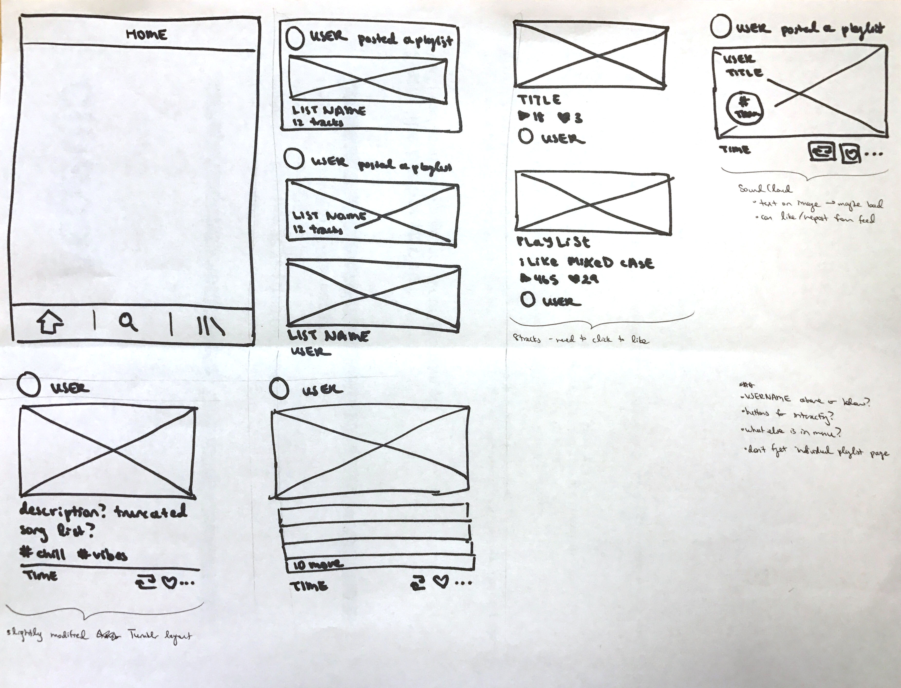
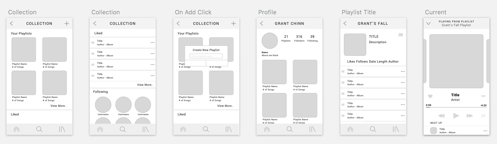
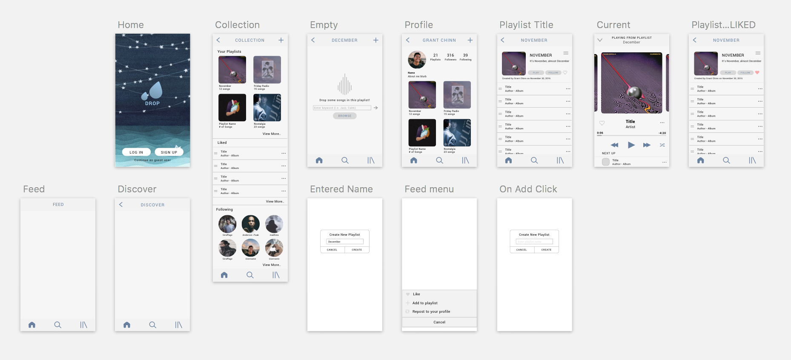

Drops
Fall 2016 · CSE187: Usability & Info Architecture
Method
Tools
Team
Role
Hi-fi Prototyping, Interaction Design, User Interview
Sketch, InDesign, LookBack
Grant Chinn, Marisa Kanemoto
Stylized our designs on Sketch and contributed to design decisions throughout each process
Overview
Drops is a social music app we created with the main objective to improve interactions on existing apps through competitive analysis and user testing. Our team tested Spotify, SoundCloud, and 8Tracks in particular and found that the most important aspect of music sharing was personalized recommendations and socializing with artist and curators a user trusts.
RESEARCH + BRAINSTORMING
I created hierarchical site maps for 8Tracks to visualize their interaction flows and find out what was redundant and discover redesign opportunities.

Finding Redesign Opportunities
Below are several of redesign opportunities we addressed in our final prototype.
Spotify doesn’t have a page that shows you what people you follow have liked, created, or reposted. You have to go to your own profile, go to your following artists, click into a specific person you’re following, scroll to the bottom to see your playlists, which doesn’t even show the arrangement by dates, unless the artist titled the playlist “November”, it’s very hard to tell which is the newest.
REDESIGN + ITERATING
After competitive analysis and searching for redesign opportunities, we began sketching out potential solutions for profile, playlist creation, and feed. These sketches are done by Marisa!
We realized that users valued their personal recommendations and the taste of trustworthy artists and users the most while they searched for new music. This was clearly evident through loyal Soundcloud users who curate their personal playlists just by playing their entire feed and add the ones that stand out to their personal likes. However, we found that Spotify had more popular artists and a wider range of genres. We had to decide how to merge the two to optimize a sociable music app based on our findings and whether to showcase each user’s reposts, likes, playlists, or all of them.
 We eliminated the “top charts” section because we realized that it’s not one of the most valuable aspects; none of our interviewees said they interacted with that section. Mainstream music and charts are easily accessible anywhere, while users want a more curated stream of playlists for their personal apps, especially if they’re subscribed. Then, we decided that genres and moods are usually accessed through the action of searching for something more specific, while users generally already know what they like and want to get to that kind of music right away without going through and looking at genres and moods. In addition, a lot of music fits into ambiguous or multiple genres.
Inspiration
The design of the profile page is inspired by Instagram. We realized that Instagram has become one of the most popular platforms when it comes to exploration from new fashion styles to new restaurants. However, music discovery seems a lot more tedious. While SoundCloud values personal taste and aesthetic like Instagram, the user base is still limited due to its small library. We realized that having a clearer profile page showcasing a user’s personality is beneficial even in a music app. Although this could not be shown in the prototype, I was thinking of including an audio aspect to the profile (i.e. autoplay of your “personal anthem” or a snippet of your favorite lyric, playlist previews upon clicking).
Solution
I created the wireframes on Sketch, and after iterating on that, I stylized it to be synced to InVision for prototyping the interactions.
With side by side layout, it's easy to see how our app would flow. Inspired by Instagram, we wanted the app to look seamless but still full of useful information users can discover and socialize with.
I created a simple logo and stylized each frame. I decided on this flat and minimal design with a muted palette so the main colors would be from the album artworks.
The final solution was prototyped in high fidelity on InVision. Use our InVision prototype below!